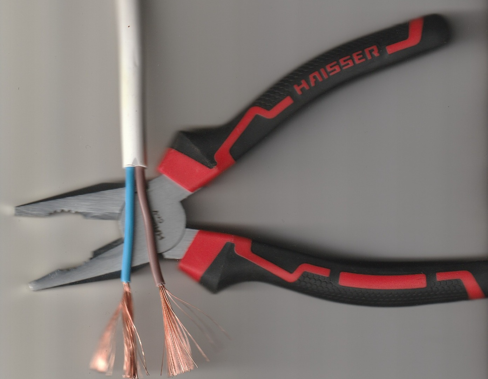

Які кабелі доцільно використовувати в побуті?
На нашому ринку представлена така велика кількість типів кабелів, що звичайному споживачеві дуже складно розібратися, де і коли можна використати той чи інший варіант. Тому Редакція "Майстрів та будівельників Покрова", як завжди, розкриває складну тему простою та зрозумілою мовою. Сьогодні ми поговоримо про вибір провідників для використання в побуті та облаштування стаціонарної енергомережі.
Важливо: Для організації енергоживлення в побуті варто використовувати виключно мідні кабелі з монолітною жилою, переріз яких підбирається відповідно до планованого навантаження.
Поперечний переріз підбирається таким чином:
- Для освітлення: тільки 1.5 мм² (відповідно захисний автомат на 10 А);
- Для розеточних груп: варто використати 2.5 мм² (автомат захисту має бути на 16 А);
- Для живлення кухні: варто застосовувати кабелі перерізом 4–6 мм². Мова йде про духовки, водонагрівачі, варильні поверхні (під кабель перерізом 4 мм² варто ставити автомат на 25 А, під кабель перерізом 6 мм² варто ставити автомат на 32 А).
Щодо типів кабелів, які варто використовувати для житла:
- ВВГ — найпопулярніший мідний кабель з монолітною жилою для влаштування енергоживлення в житлових будинках. Популярність його пояснюється найдоступнішою ціною в родині ВВГ. Це оптимальний вибір у категорії "ціна-якість-безпека".
- ВВГнг — оптимальний вибір для житлових приміщень (квартири, будинки), оскільки він відповідає високим вимогам безпеки. Це мідний кабель з монолітною жилою, що має подвійну ПВХ-ізоляцію (індекс "нг" означає "негорючий").
- ВВГнг-LS — топовий вибір. Крім індексу "нг" (не підтримує горіння), він цікавий ще й тим, що при нагріванні майже не виділяє диму та токсичних газів (Low Smoke).
Треба зазначити, що вся родина кабелів ВВГ за умови нерухомого типу монтажу розрахована на 30 і більше років служби.
⚠️ Важливий нюанс про кабелі ПВС та ШВВП або чому ваш гаманець в небезпеці?

Це, мабуть, справжня "інквізиція" сучасного ремонту. Дуже часто звичайні покупці (а іноді й горе-електрики) купують плоский кабель ШВВП або круглий ПВС для прокладання стаціонарної проводки в стінах. Головний аргумент — «та він же м'якенький, його так зручно прокладати, та й коштує дешевше!» або «дивіться, яка товста ізоляція у ПВС, точно не проб'є».
Редакція "Майстрів та будівельників Покрова" офіційно заявляє: так робити категорично заборонено! І ось чому:
- ШВВП та ПВС — це взагалі не кабелі для проводки. За класифікацією це шнури та проводи. ШВВП розшифровується як: Шнур вініл-вініл плоский. Відчуваєте різницю між потужним силовим кабелем і шнуром від настільної лампи?
- Термін служби у стіні: Обидва ці провідники мають багатожильну структуру (складаються з багатьох тонких волосків). Їхня м'яка ізоляція розрахована на те, що кабель буде постійно рухатися та згинатися на відкритому повітрі. Якщо замурувати їх у штукатурку або бетон, без доступу повітря ця ізоляція починає стрімко старіти, сохнути й тріскатися. Термін служби ШВВП та ПВС у стіні обмежується всього 10 роками (тоді як у правильного ВВГнг цей термін — від 30 років!). Через 10 років ви отримаєте загрозу короткого замикання просто всередині своєї стіни.
- Складність монтажу в розетках: Оскільки жила складається з волосків, її не можна просто так затиснути гвинтом у розетці чи автоматі — гвинт просто переріже половину волосків, контакт погіршиться, почнеться нагрівання та іскріння. Кожну таку жилу електрик зобов'язаний зачистити та спресувати спеціальним металевим наконечником (НШВІ) за допомогою спеціального інструменту. А тепер подумайте: чи буде той «майстер», який порадив вам ШВВП, бавитися з наконечниками на кожній розетці? Навряд чи.
То де ж їх використовувати?
ПВС: ідеально для подовжувачів, підключення пральних машин, холодильників чи газонокосарок.
ШВВП: підключення телевізора, світильника, зарядки для телефона та іншої малопотужної техніки у розетку. Але в стінах їм — суворе табу!
🚫 Тепер щодо алюмінієвих провідників (АППВ та АВВГ)
Алюмінієві провідники зваблюють низькою ціною, проте є декілька суттєвих аргументів, чому від такої ідеї слід категорично відмовитися:
- Низька провідність: алюміній суттєво поступається міді в здатності проводити струм. Тому для однакового навантаження доведеться брати набагато товстіший кабель, що ускладнить монтаж.
- Крихкість та тендітність: алюміній має низьку температуру плавлення. Уже після першого серйозного перевантаження провідник може втратити форму. Як наслідок — погіршується контакт, він починає інтенсивніше нагріватися та іскрити, що може призвести до пожежі. А вже при другій чи третій заміні розетки ви ризикуєте отримати зламаний прямо в стіні дріт. І що ви тоді відчуєте? Тільки біль і розпач.
- Небезпека з’єднання з міддю: місця прямого з'єднання алюмінію та міді при найменшому потраплянні вологи миттєво окислюються. Це гарантовано призведе до втрати контакту, виходу з ладу дорогої техніки або навіть до займання.
Де можна використовувати алюмінієві провідники? Єдина сфера, на думку Редакції "Майстрів та будівельників Покрова" де алюміній сьогодні виправданий — це магістральні повітряні лінії за межами будинку (наприклад, кабель СІП від стовпа до ввідного щитка) або тимчасове живлення великих об'єктів на вулиці.
Прочитавши нашу статтю, ви тепер озброєні знаннями. І якщо найнятий електрик пропонує вам закласти в стіну алюміній або кабель ПВС — це серйозний привід задуматися, чи достатньо професійним є рівень такого майстра.